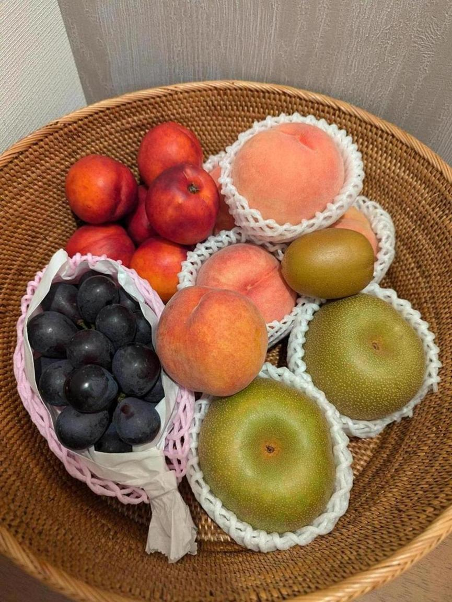

<- 日記

果物かごが満杯。 スーパーで1300円くらいでナガノパープルが売ってたので救出してきた。 桃は4個で1000円しないくらい。今年はハーコットをまだ1回しか見てない。
昼にこれまで行ったことのなかったラーメン屋に行った。かなりうまかったが、また行くかというとわからない。日高屋の創業者が、飽きないように美味くしすぎないと言ってるみたいな感じで、上手いんだけどたまにでいいな、という感じのラーメンだった。飲食店経営は大変だなと思う。